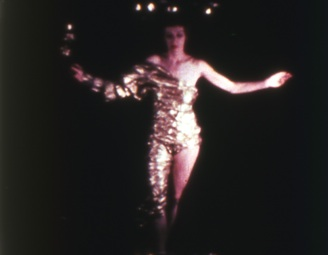

Presentations: Alice Hutchison

Left: Inauguration of the Pleasure Dome (1954) by Kenneth Anger.
Image courtesy of Kenneth Anger
While the portrayal of visual artists by filmmakers has become a popularized genre, accurate and authentic portrayals of contemporary artists (rather than historical 'personalities') have been rare. In 1954 Kenneth Anger filmed Inauguration of the Pleasure Dome with artistic colleagues as his actors; visionary artist Cameron, erotic author Anaïs Nin, filmmaker Curtis Harrington, designer Paul Mathison, Samson de Brier, Joan Whitney, and painter Renate Druks. In 1956 Curtis Harrington created the short film The Wormwood Star, a poetic evocation of Cameron and her work. The Wormwood Star happens to be the only remnant of Cameron's paintings featured in the film in which the artworks are not merely portrayed but inhabit the screen space. It is the only documentary evidence of the existence of these paintings which were later destroyed as part of Cameron's self-abnegating creative process, one of metamorphosis and transformation. Her imaginative drive to physically manifest her subconscious and altered states of consciousness embodied fantastic creatures, protean growth, in figurative and abstract delicately rendered ink drawings and gouache paintings. Along with Curtis Harrington's earliest experimental films from the late 1940s which are very rarely screened, Harrington's collaboration with Cameron in The Wormwood Star was his last personal, poetic, experimental film before he shifted into the commercial realm.
The last years of the 1940s and early 1950s during one of the most socially repressive times in American history, was certainly a time when the visual and literary arts (Surrealism in particular), poetry and film were more closely aligned and intertwined than ever - and developments in France were drawn upon by these two independent young filmmakers in Los Angeles. The psychological manifestations and grappling with the horrors of war and the advent of mythopoesis in the 1940s and 50s were creative developments that have resonated since. This analysis is but a tightly focused view of a certain alternative milieu, a unique convergence of artists and writers around Anger and Harrington specifically, amongst a vibrant group of personalities who converged in Los Angeles in the early 1950s, when alternative culture was driven underground and into private residences, providing the social and artistic intermingling’s which gave birth to the creative synergies of the time.
Alice L. Hutchison is a contemporary art curator and author based in Los Angeles working internationally. From 2007 to 2009 she served as Curator of Exhibitions at the University Art Museum, California State University Long Beach. Recent exhibitions include Aniwaniwa for the 2007 Venice Biennale, Italy; art/tapes/22 (2008, in partnership with Venice Biennale ASAC archives for contemporary art). She has authored and contributed to artists’ books, catalogues and art magazines in U.K., U.S., Germany, Mexico, New Zealand, Italy and Sweden, and is the author of books including the monograph Kenneth Anger: A Demonic Visionary (BDP, London 2004). From 1998-2003 she was Associate Director and Curator for Ace Gallery based in Los Angeles. She received her Master of Arts degree in Art History with First Class Honours from the University of Auckland, NZ in 1994. She is currently conducting research towards the first retrospective exhibition of the artist Cameron
Scarlet Woman on Film: Inauguration of the Pleasure Dome (1954) and The Wormwood Star (1956): Kenneth Anger, Curtis Harrington, Cameron, and Los Angeles alternative film and culture in the early 1950s
This presentation is part of the panel entitled Subcultures Scene and Seen, being held on Saturday November 13, 2010 1:00pm - 3:30pm in the Eileen Norris Cinema Theatre.
Left: The Wormwood Star (1956) by Curtis Harrington.

Los Angeles Filmforum | Site Design by Stephanie Sapienza | Contact